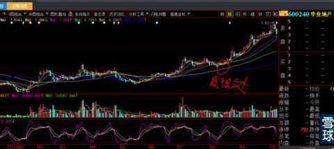
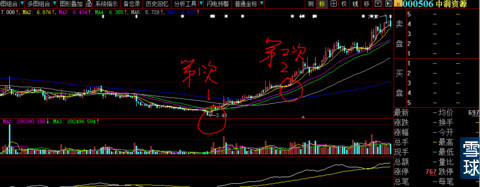
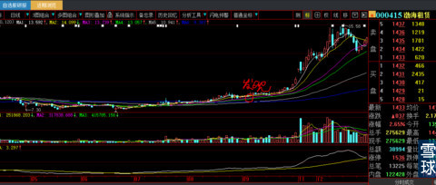
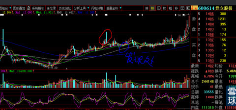

老大看着小朋友们，抱过如山的简历，二话不说，拿起一份放在桌子上，又拿起一份丢进垃圾桶，再循序拿起一份放桌子上，又拿起一份丢进垃圾桶。不一会就筛选掉500份，把剩余500份交给小朋友们：就在这里面挑我们要的人。
小朋友蒙了，问老大：那不是可能会漏掉我们最需要的人？
老大：是的，那又怎么样？你愿意和一个没有运气的人共事吗？
我8月20日前后刚被朋友介绍来雪球的时候（我不知道有这个门户网），第一批选中的股票有600240华业地产（理由：报表显示近几年很少拿地，读它报表预计年终账面货币资金会超过70亿，北京地产项目销售巨好，公开言论有进军医院倾向，股价绝对低廉与明确业绩不配陪（当时同类唯一最有一比的就是“北京城建”））。
虽然现在停牌未开，看来未来的股价又是一个大牛惊喜，在此还是要恭喜买入的那几位小伙伴了。

000506中润资源（理由：当时写了一个很长的帖子，回忆我2008年11月6日为何要在3.47元买入600783鲁信创投（那时候叫鲁信高新）的故事，我觉得那是一次我投资股票生涯最富传奇的一次。告诉大家000506走势的角度与力度，直觉告诉我，这是第二个当年的600783），记得互动中只有一位小伙伴听我讲2008年故事后买入了000506了。

000415渤海租赁（理由：盘中交易虽然极其清淡，但不时冒出来虽然不大的庄家成交单，虽然很隐秘还是很容易看出来，并且这个庄家资金实力极其雄厚（当时点评的原话）。这个记得也有好几位小伙伴买入并且经受住了停牌复盘后头几天的震荡。

600614鼎立股份（理由：9月5日那根高开低走明显人为刻意制造的虚假大阴棒在我翻盘的时候一下子吸引住眼球，虽然基本面至今我仍然不清楚）。

4个月过去了，前两个拉高20%多后停牌至今（600240、000506），000415不久也停牌，现在股价差不多从发现到现在正好4个月翻一倍。
只有第四个600614鼎立股份这个倒霉鬼（预计下周一冲高后开始回踩动作），直到本周一才开始有所启动（当天高走回落上阴长影线，但庄股开始启动已经没有悬念了），当晚一个一直跟踪这只股票的老粉丝私信我：心大，600614要启动了吗？我只回复他一个
如果将来我跟没有经历过最近这次大盘风起云涌经历的新人讲起600614这些过程，你们觉得他们能理解我那晚的百感交集吗？他们只会孤立的看待个股，绝不会综合考虑大盘环境给人的取舍定夺。
没有亲身经历过程，永远不知道事实的真相与当时全方位取舍。这就是我想起开头故事的起因。
特别备注：看到很多跟帖的奇葩回复，真是哭笑不得。本帖没有任何技术、看股好与坏，就是一篇感叹帖子。是感叹努力再重要，跟运气相比也是很小的一部分，就如同上面4只股票，你的全部资金买了前三只就是运气，最后一只就是倒霉蛋，如果你身在其中从8月至今，什么也没有捞着。大盘风起云涌，猪都飞上天了，它才姗姗来迟稍微有些起色。
这就是命，这就是运气！
看懂了吗？那些奇葩们！
ChenMatthew：请教老师，渤海租赁图形符合大的特性，行情大，主力实力能够评判，但是画圈处的量能有什么特别的吗？我早就觉得老师对细部特征的观察无人能比。
回复 ChenMatthew：
你是我在众多小散里一个发现比较悟性很高之一。特别帮你分析一下。
1、首先，000415渤海租赁在2014年9月16日发现它时，我查看了总股本17.74亿股，前八大股东都是2011年与2014年4月定增对象，扣除他们前十实际不会卖压的持股13.7亿股，其实真实流通盘在4亿股以内，与我在分析601336新华保险（24元时）特别看好是基本一致方法的。
2、渤海租赁2012年每股收益0.61元，2013年0.83元增幅高达36%，无论是每股的绝对收益（不像其他概念股，只有几分钱）还是收益增长率都是很惊人的，行业又特别另类。首先股价有了炒作的底气。高收益与低股价是不配陪的（就像今天的红太阳）
3、虽说4亿股本不大，这是相对渤海租赁而言，实际上在现实中，4亿流通盘是很大的（那时候的大盘不像今天），总股本更是17.74亿股，假设股价翻一倍，总市值就从每股8.5元总市值的150亿元扩增到300亿元（中国建筑、建设银行实际流通市值当时也没有那么多，但那是上百亿股的流通盘啦），那是需要多少资金去托住呀？
4、你看前十大股东，个个手中股票有多少？都是上亿股啊。其中有一家不心齐要卖出，庄家没有100亿现金哪里敢坐这个庄？要么就是的确有很多钱，同时前十大股东已经非常默契的内部绝对沟通过，并且前十股东账户相互有监督与监管机制（绝对有，只是散户哪里懂这些？），防止单方面毁约砸盘出逃。
5、4亿流通盘也有价值35亿元，这么大的盘子，能够长达8个月把股价控制在狭小范围波动，可想而知，这4亿股里他们实际已经控制了多少（想想今天的XHP吧）？再看盘面交易每天的成交量最大1200万股，最小600万股，4位数买卖单都属于大单了，与4亿股流通盘完全不匹配，即使这样，我观察到，每当盘面有冲动，都会有连续大单（其实就是3位数与4位数之间，与小盘股无异）遏制或者托起。每天的开盘、收盘价格控制随心所欲。你说庄家实力雄厚不雄厚？控盘能力强不强？
6、显然现在的股价仍然不是最终的头部，你想啊，前十那么多的数量，怎么出逃变现呢？稍微卖多一点，股价就下一个大台阶甚至跌停，怎么可能现在就有出逃的打算？散户不是有钱人，怎么可能体量到有钱人的痛苦？怎么办？长期坐庄呀！净资产那么高，每股绝对收益那么多，还在高增长，庄家就会利用未来2年时间，反复送股除权，稀释股价，再利利索索的以爆庄股的方式连续涨停拉高，使后来者在未来的快速狂涨中才会有疯涌的买盘冲动供其出逃（知道怎么会提前晓得那些股会有送股题材了吧？又教你一招）。什么时间呢？天知道。反正我现在不知道。有一点是肯定的：除权后一定有狂炒过程。那时候的狂涨目的就为一个字：卖。等股价连续炒高后，再连续跌停，下跌50%（也比现在股价高至少50%，对于百亿大资金而言2年再多赚50亿，你不觉得还有比这更牛逼的生意吗），那时候散户觉得好便宜啊！庄家就在这个时候才是真的卖货区间。绵绵不休的下跌半年以上出货干净，之后股票就是无娘的孩子，随波逐流了，一年股价比一年低。